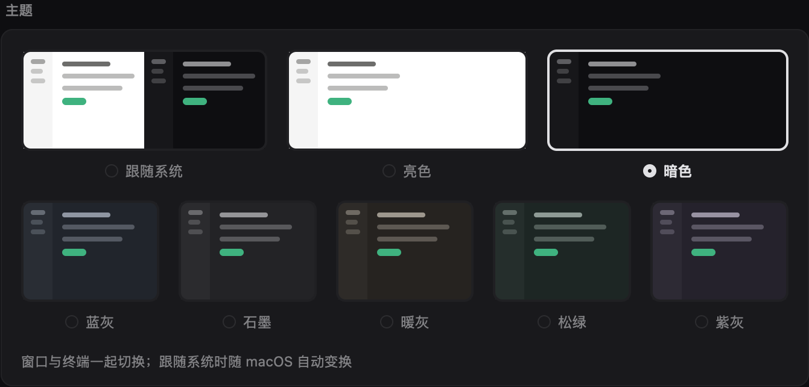

主题：默认好看，想改什么都能改
要定的事：外观页用哪个方向，以及按什么顺序把外观全部开放给用户。推荐方向 A。下面的外观页可以直接点，整块面板会跟着换色。配色小图的颜色取自 mooring-core/src/terminal.rs 和 ui/theme.rs；面板自身的卡片层次是近似值，以实现时的原生截图为准。
现在哪里不对
- 「暗色」一词两义。它既是明暗模式，又是一套具体配色（近黑
#0e0e11）。下面五套也都是暗色，却不算在「暗色」里。 - 两排大小不同，暗示级别不同，其实是同一组单选。八张图互斥，第二排看起来却像第一排的附属选项。
- 预览小图和实际窗口不符。小图的侧栏比主区亮（
window_sketch写死mix(bg, fg, 45)），实际窗口的侧栏比主区暗。 - 跟随系统只能用近黑。喜欢蓝灰的人，一选跟随系统，晚上就回到近黑。
方向
模拟 macOS：
外观
窗口与终端一起切换，选中即生效。
界面样式
界面样式标准：现在的布局；终端原生：外壳退成细线
和现在并排看（方向 A）

主题
方向 A 的完整规则
| 明暗 | macOS | 窗口颜色 | 下面显示 | 点主题时 |
|---|---|---|---|---|
| 跟随系统 | 深色 | 暗色组选中的主题 | 亮色、暗色两组，暗色组标「正在用」 | 点暗色组立即换色，点亮色组只记下 |
| 跟随系统 | 浅色 | 亮色组选中的主题 | 亮色、暗色两组，亮色组标「正在用」 | 点亮色组立即换色，点暗色组只记下 |
| 亮色 | 不看 | 亮色组选中的主题 | 只有亮色组 | 立即换色 |
| 暗色 | 不看 | 暗色组选中的主题 | 只有暗色组 | 立即换色 |
| 终端原生样式 + 跟随系统 | 不看 | 暗色组选中的主题 | 两组，暗色组标「正在用」 | 同上，只看暗色组 |
- 名字：近黑那套叫「曜黑」，唯一的亮色主题叫「纸白」。「亮色」「暗色」只表示明暗模式，不再和主题重名。
- 菜单栏：Mooring › 外观：跟随系统、亮色、暗色，分隔线，亮色主题，分隔线，暗色主题。每组一个勾。
- 搜索：设置里搜曜黑、纸白、蓝灰等都能定位到主题区。
- 预览小图：和窗口共用同一份取色：侧栏比主区暗，主区是亮起的一块。不再单独写一套混色。
存储和迁移
appearance 旧值 | 升级后的明暗 | 亮色主题 | 暗色主题 |
|---|---|---|---|
system | 跟随系统 | 纸白 | 曜黑 |
light | 亮色 | 纸白 | 曜黑 |
dark | 暗色 | 纸白 | 曜黑（看到的颜色不变） |
slate graphite warm pine plum | 暗色 | 纸白 | 对应那套（看到的颜色不变） |
appearance 以后只存 system|light|dark；两组的选择存在 theme-light、theme-dark，内容是主题 id 字符串，不是枚举序号，这样以后用户主题不用再迁移一次。退回旧版本时，明暗读得懂，主题回到默认。
这次要做的范围
mooring-core/src/terminal.rs：Scheme::Dark、Scheme::Light的显示名改为曜黑、纸白，内部名不动，不影响终端颜色和 OSC 回报。ui/appearance.rs：Appearance拆成明暗和两组主题，负责迁移和判定；保留测试并补迁移、跟随系统两组。workbench/settings.rs：主题卡片重画，预览小图改取真实颜色，搜索词更新。main.rs：菜单分三组，ChooseAppearance随之拆开。settings_evidence.rs：themes场景走新结构，加跟随系统和亮色模式的截图。
Warp 怎么做
依据是 Warp 客户端源码（主体 AGPL，这里只参考设计，不搬代码）、自定义主题文档、主题选择文档和社区主题仓库。
| 环节 | Warp 的做法 | Mooring 怎么办 |
|---|---|---|
| 设置模型 | 三个值：当前主题、是否跟随系统、亮暗各一个主题（app/src/settings/theme.rs） | 学，方向 A 因此改成亮暗各记一套 |
| 主题文件 | ~/.warp/themes/*.yaml：名字、背景、前景、强调色、可选光标、明暗、16 色 ANSI | 学思路，字段更少，用 JSON，和插件格式一致 |
| 界面其他颜色 | 由这几个颜色推导：surface_1..3、outline、各级文字色都是函数 | 已有，Palette::new 就是从 bg、fg 推导 |
| 强调色 | 每套主题一个，可以是彩色或渐变 | 默认不用，但开放：默认的强调色保持近白，彩色留给状态；用户想要彩色就能覆盖 |
| 预览 | 选择时先设临时主题，确认才保存，取消就恢复（set_transient_theme） | 学 |
| 从图片生成 | 取主色 5 个（Lab 空间 k-means），用户选背景；前景黑白二选一；强调色取色差最大的；ANSI 用固定预设；背景图透明度 30 | 以后再看 |
| 编辑 | 应用内只有从图片生成；调色要手写 YAML，文档写应用内创建和分享尚未提供 | 做得比它多，见下面的编辑器和 Agent 写主题 |
| 分发 | 独立的社区 GitHub 仓库，手动放进目录 | 走插件市场，新增只含数据的主题类型 |
| 出错兜底 | 主题找不到就回默认暗色 | 学，并在设置里报出哪个文件有问题 |
| 例外 | 自家旗舰主题 Phenomenon 另有一套专用颜色，不走公开格式（phenomenon.rs） | 警惕，曜黑的侧栏 #0c0c0f 也是这种特例，开放前要收进推导规则或单独说明 |
文档和代码有出入：文档写背景图只支持 JPEG，生成器的代码提示写的是 .png、.jpg。这里以代码为准，没有实际跑过 Warp。
对照 iTerm2：把能改的列全
依据是 iTerm2 的颜色、窗口、文字和外观文档，以及 Mooring 现有代码。阶段见下一节。
| 类别 | iTerm2 能改 | Mooring 现状 | 计划 |
|---|---|---|---|
| 基础颜色 | 前景、背景、光标、光标文字、粗体、链接、下划线 | 只能选七套内置主题 | 全部开放，阶段 1 |
| 选区 | 选区颜色、选中文字颜色 | 由主题推导 | 开放，阶段 1 |
| 16 色 ANSI | 全部可调 | 只有亮色有自定义表 | 开放，阶段 1 |
| 明暗分开 | 同一配置亮暗各一套颜色 | 只能跟系统切亮和近黑 | 方向 A，阶段 0 |
| 预设 | 导入和导出 .itermcolors，有在线图库 | 无 | 导入 .itermcolors，阶段 1；这样直接接上现成配色生态 |
| 对比和弱化 | 最低对比度、弱化文字透明度 | 弱化固定 0.5（screen.rs:1152） | 开放，阶段 3 |
| 光标 | 形状、闪烁、柔和闪烁、十字辅助线、移动动画 | 闪烁、未聚焦样式可调；能画四种形状，但只听程序的 | 默认形状和辅助线，阶段 3；动画以后再看 |
| 字体 | 主字体、非 ASCII 字体、连字、粗体、斜体、细笔画 | 字体、字号、行距；连字关闭 | 非 ASCII 字体和连字，阶段 3（连字要量性能） |
| 窗口材质 | 透明度、模糊 | 无，但 GPUI 已支持透明和模糊窗口 | 开放，阶段 4 |
| 背景图 | 单图或轮播，四种缩放，混合强度，每个窗格单独 | 无 | 单图、四种缩放和混合强度，阶段 4；轮播以后再看 |
| 变暗 | 变暗强度，非当前分屏和后台窗口，可只影响文字 | 非当前分屏可调 | 后台窗口和「只影响文字」，阶段 3 |
| 布局 | 标签位置、状态栏位置、窗格标题、边距 | 标准和终端原生两种样式；终端原生标签在底部 | 边距、标签位置，阶段 5，要逐个评估 |
| 分会话 | 每个配置一套外观，标签可单独着色 | 全窗口一套 | 每个空间单独主题，阶段 5 |
| iTerm2 没有的 | 无 | 侧栏、状态色、标签芯片、空间渐变 | 全部开放，这是 Mooring 独有的部分 |
怎样做到能改很多，又不乱
- 三层，每层都能停：只选一套主题；或者只改背景和前景，其余自动推导；或者展开逐项覆盖。没覆盖的项继续跟着基础色变。
- 内置主题只读：点「调整」就复制成「我的主题」，随时能回到原样，每一项都有「重置」。
- 主题和个人习惯分开：颜色和材质跟主题走；字体、字号、行距和光标形状留在终端设置，换主题不会动你的字体。
- 提示但不拦：对比度不足时明确提示，用户仍然可以保存。
- 名字是公开约定：每个可改项有稳定英文名，文件里未知的项忽略，缺的项走推导，改名要保留旧名。
试一下：主题编辑器原型
改一个颜色，右边整个窗口立刻变。没改过的项标「推导」，会跟着背景和前景走；改过的标「已改」，可以重置。原型只放了每组有代表性的项，默认状态色和亮色 ANSI 取自代码，暗色 ANSI 是示例值。
主题文件
只有 bg 和 fg 必填，其余都可选。下面是完整结构的节选：
{
"name": "深海",
"bg": "#0f1c2e",
"fg": "#d5dfef",
"terminal": { "cursor": "#2f81f7", "cursor_text": "#0f1c2e", "selection": "#2a4a70",
"selected_text": "#ffffff", "bold": "#ffffff", "link": "#7cc4ff", "underline": "#7cc4ff" },
"ansi": { "red": "#e5534b", "bright_red": "#ff7b72" },
"ui": { "sidebar": "#0b1522", "border": "#23344d", "accent": "#7cc4ff", "muted": "#7f8ea3" },
"status": { "running": "#e5b83b", "review": "#3fb27f" },
"tone": { "ok": "#4cc38a", "warn": "#e5b83b", "danger": "#e5534b" },
"space_gradients": [["#f59e6b", "#d9467a"]],
"window": { "opacity": 0.92, "blur": 20,
"image": { "path": "sea.png", "mode": "fill", "blend": 0.3 } }
}
colors.json 现有的状态色覆盖继续生效，放在主题之上；等编辑器上线后，第一次打开时把它转成「我的主题」的一部分，避免同一颜色长期有两个来源。
开放的路线
| 阶段 | 用户得到什么 | 要动什么 | 放弃或停下的条件 |
|---|---|---|---|
| 0 现在 | 方向 A | 上面的范围。主题存 id 字符串 | 无 |
| 1 所有颜色 | 主题文件能覆盖全部颜色，几秒内生效；能导入 .itermcolors；能让 Agent 写主题 | 颜色改为运行时生成；公开约 90 项：界面 33、侧栏 18、ANSI 16、终端细节 7、状态和语气、空间渐变；后台协议传颜色值；把曜黑的特例改成覆盖项 | 切换或每帧开销用 CPU 探针量出明显上升，先修再往下做 |
| 2 应用内编辑器 | 上面原型的完整版，导入导出，先预览后保存 | 设置页，临时主题机制 | 无。这是你要的核心能力 |
| 3 终端细节 | 默认光标形状和辅助线、非 ASCII 字体、连字、最低对比度、弱化强度 | screen.rs 和 terminal_text.rs | 连字让终端 CPU 明显上升就默认关闭，只作选项；还不行就不做 |
| 4 材质 | 透明、模糊、背景图 | 窗口外观和终端底色绘制 | 状态色和文字读不清，或终端 CPU 明显上升，就只保留透明度 |
| 5 分享和按空间 | 市场装主题，每个空间一套，部分布局项 | 插件 themes 类型；主题从全局变成按窗格解析 | 按空间的主题若拖慢每帧绘制就放弃，保留全局 |
验收和放弃条件
- 每种旧配置升级后，窗口截图和升级前逐像素一致。
- 每套主题的预览小图和实际窗口的明暗层次一致：侧栏暗、主区亮。
- 切 macOS 深浅色时，跟随系统模式换到对应组选中的主题，不再固定近黑。
- 放弃条件：做出来后，如果「暗色」和「曜黑」的关系仍要解释才看得懂，就重新设计命名。方向 C 只在确定不开放自定义主题时才考虑。
决定
- 待验证：现在实现修订后的方向 A，等你确认。
- 采用：Warp 的亮暗两组模型、由少数颜色推导界面、先预览后保存。
- 采用：能改的尽量都开放，对照 iTerm2 列全，并多开放 Mooring 独有的侧栏和状态色。
- 改变：之前否定的彩色强调色改为可覆盖，默认仍然不用。
- 待验证：连字、背景图和按空间主题，看性能和可读性再定。